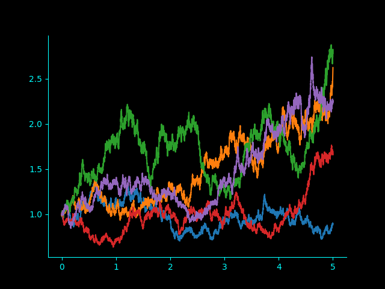

Brownian Motion Graphs
Paths generated for Simple Brownian Motion

Paths generated for Geometric Brownian Motion
Theoretical Mean
Experimental Mean
Theoretical Variance
Experimental Variance
{{mean_t}}
{{mean_c}}
{{var_t}}
{{var_c}}